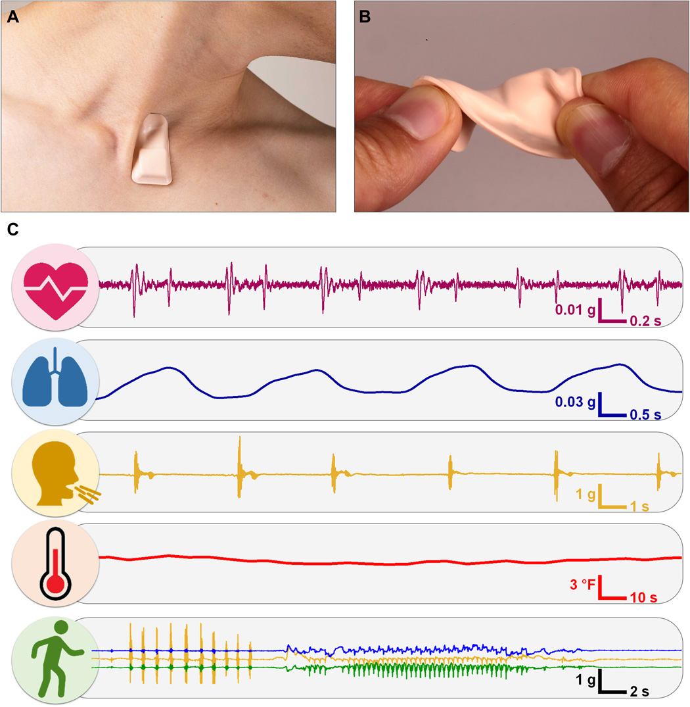

Existen varios dispositivos y weareables disponibles para rastrear signos, e impulsar la adherencia a un tratamiento desde casa.
SensEcho es un chaleco multi-sensor portátil que ayuda a la rehabilitación de COPD, este dispositivo obtiene señales fisiológicas de ECG, señales respiratorias de la caja torácica y el abdomen, postura y actividad a través de un conjunto de sensores integrados en el chaleco, este producto ha obtenido la aprobación como dispositivo médico de Clase II. La rehabilitación respiratoria y la actividad física diaria son medidos eficazmente debido a la tecnología de pletismografía inductiva respiratoria. Además, algunos parámetros como la temperatura corporal, la saturación de oxígeno (SpO2) y la presión arterial podrán ser medidos al integrar en SensEcho dispositivos de acceso vía Bluetooth. Las señales fisiológicas capturadas se procesan en tiempo real y son guardadas en una base de datos clínicas y otra de formas de onda. El sistema está diseñado para la monitorización completa de pacientes hospitalizados. Los informes analíticos sobre los estados de salud del paciente como alertas de signos vitales,análisis de variabilidad de la frecuencia cardíaca, análisis de patrones respiratorios, etc se generan automáticamente y son enviadas a los médicos.[1]
myCOPD es una herramienta digital diseñada para ayudar a las personas que padezcan de enfermedad pulmonar obstructiva crónica (o en sus siglas en inglés COPD). Puede ser utilizado en cualquier etapa el progreso de la enfermedad de la persona, ya sea recién diagnosticado o aquellos dados de alta hospitalaria. Todo paciente puede acceder a myCOPD desde un dispositivo con conexión a Internet. Es un servicio integrado de educación en línea, notificación de síntomas y rehabilitación pulmonar. Cuenta con un tablero de autocuidado así como herramientas y recursos educativos que orientan al paciente en los cuidados que deba tener, como el uso de inhaladores, medicación, entre otros; además de una prueba de evaluación de la COPD para poder optimizar el control de sus síntomas. Las personas también pueden acceder a un curso de rehabilitación respiratoria en línea de 6 semanas el cual consiste en un programa de ejercicio incremental con sesiones educativas para ayudar a promover el autocontrol de la enfermedad. Además, myCOPD puede permitir que los médicos accedan a los datos del realizar decisiones de gestión y seguimiento de manera remota, accediendo a su perfil e informes de evaluación; cualquier cambio de su médico encargado es comunicado automáticamente al paciente como notificaciones. myCOPD tiene un costo de £ 40 por persona (sin IVA). No obstante, el impacto en los recursos sería adicional a la atención estándar; pues el costo estimado de un programa de rehabilitación pulmonar ambulatoria de 8 semanas oscila entre £ 522 y £ 14 por persona. Finalmente, el aspecto innovador de esta herramienta es que permite al paciente a que se le brinde atención (como la rehabilitación pulmonar) de forma remota, en función de las necesidades autoevaluadas de la persona. Además de poder ayudar a las personas con COPD a controlar su afección en el hogar donde los servicios son limitados debido a COVID-19.[2]
Sonica Health está utilizando un parche portátil bio integrado llamado ADAM. Este permite realizar la monitorización de COVID-19, adaptada específicamente a los síntomas clave. Cuenta con un sensor delgado y suave con un acelerómetro de gran ancho de banda y un sensor de temperatura de precisión que se monta en comunicación mecánica directa con la piel que recubre la muesca supraesternal. Esta pequeña área del cuerpo en la base del cuello proporciona una excelente interfaz con la cavidad intratorácica para grabaciones de alta fidelidad de las vías respiratorias. Actividad, desde la frecuencia, intensidad y duración de la tos, la frecuencia respiratoria y el esfuerzo, hasta las características respiratorias de alta frecuencia asociadas con sibilancias y estornudos. Recibe información de un flujo datos sobre frecuencia cardíaca, sonidos cardíacos y amplitud cardíaca. Un bolsillo de aislamiento térmico alrededor del sensor de temperatura permite medir la temperatura de la piel, con sólidas correlaciones con los valores corporales centrales, en gran medida independientes de las condiciones ambientales.[3]
La Telesalud ha sido reconocida por organismos internacionales como una herramienta para mejorar la calidad de vida y la prestación de los servicios de salud. (OMS, OPS, etc) . El recién descubierto Coronavirus (COVID-19) y la rigurosa solicitud de distanciamiento social ha puesto a la telesalud (telecoaching / telemonitorización / telerehabilitación) en primera línea. La telerehabilitación puede representar la respuesta más adecuada en la fase de COVID post aguda al combinar la necesidad de rehabilitación con la necesidad de distanciamiento social. Al adoptarse en pacientes post-COVID con discapacidades leves a moderadas, que necesitan monitoreo frecuente, muy en especial en aquellos que residen en áreas aisladas o no están disponibles para participar en programas estándar. El 17 de marzo se suspenden las actividades de consulta externa en el hospital de alta complejidad "Virgen de la puerta" en La Libertad, razón por la que el equipo de rehabilitación comenzó a realizar actividades dirigidas a pacientes COVID a inicios de mayo.En un principio el servicio de telerehabilitación se dirigió en pacientes no COVID (pacientes con otras rehabilitaciones interrumpidas) y pocos pacientes POST-COVID. En el caso de pacientes no COVID se contacta con los usuarios, para validar su participación en tele-consulta. Entonces se evalúa con el médico fisiatra , y se comienza con la telerehabilitación de manera grupal a través del aplicativo Zoom y Whatsapp.Para los pacientes Covid se han ampliado los programas a partir del mes de Julio , de manera remota una semana después del alta se realiza una evaluación del estado actual del paciente. Por lo que este cuenta con un pulsioxímetro en casa. Se tiene un promedio de 8 sesiones , 2 por semana y mediante la escala de Bohr se mide el cansancio y desgaste del paciente. Se ha visto que este tipo de trabajos no presenciales incrementan la adherencia en pacientes dados de alta además de que el trabajo remoto permite trabajar con mayor cantidad de pacientes en menos cantidad de tiempo.Situación en Perú.[4]
Existen diversos problemas sobre los sistemas de salud pulmonar, tales como la ineficacia de ejercicios de rehabilitación respiratoria en casa debido a la falta de supervisión o niveles reducidos de motivación, como también, la incomodidad que pueden causar los dispositivos biomédicos conectados al cuerpo del paciente. Por ello, se describe un sistema de rehabilitación pulmonar remota para orientar y mejorar el estado de salud de los pacientes con enfermedades respiratorias crónicas, que sea más aplicable y rentable, el cual consiste en la combinación de una cámara estéreo con detección de movimiento, un dispositivo biomédico portátil que va posicionado en la frente, sensor de datos de detección de movimiento y señal biomédica. El sistema propuesto se clasifica en cuatro segmentos: el análisis de señales biomédicas, destinado a la frecuencia cardíaca y monitoreo de la frecuencia respiratoria; el reconocimiento de gestos de ejercicio físico, define partes relevantes del cuerpo y utiliza datos esqueléticos; datos biomédicos, como parámetros para el reconocimiento del ejercicio; y el desarrollo de una aplicación en línea con una interfaz de usuario para mostrar los resultados dando instrucciones al paciente a través del servidor web sincronizando sus datos para el monitoreo y otorgando un acceso tanto a los pacientes como profesionales al historial médico en cualquier momento. El dispositivo biomédico portátil está integrado con un sensor de fotopletismografía (PPG) para recopilar los signos vitales como parámetros junto con los datos de seguimiento del esqueleto, ya que el sistema detecta la postura y movimiento de un paciente; proporcionando una retroalimentación automática. La interfaz de la aplicación de ejercicios muestra información como repeticiones diarias, instrucciones para realizar ejercicios seleccionados y un video de entrenamiento que proporciona pautas para el ejercicio seleccionado. Este proceso se realiza con el video de referencia en una pantalla por lo que el movimiento de los objetos es reconocido por el sistema de cámara de detección de movimiento y el programa pasa al siguiente paso cuando los gestos de los objetos son correctos.Por tanto, los pacientes pueden comprobar sus problemas en movimiento sin la supervisión y obtener retroalimentación de cada progreso en tiempo real.[5]